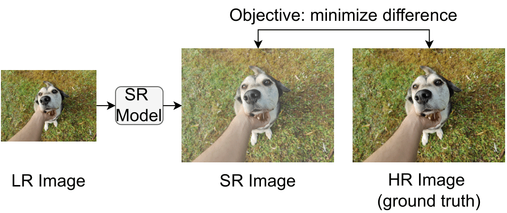
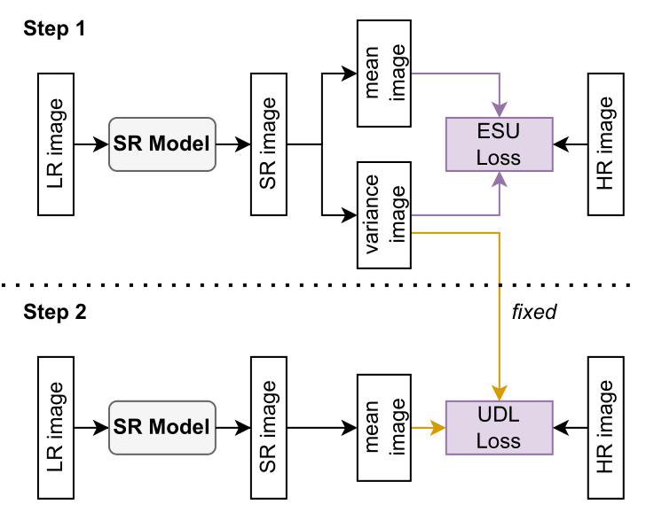
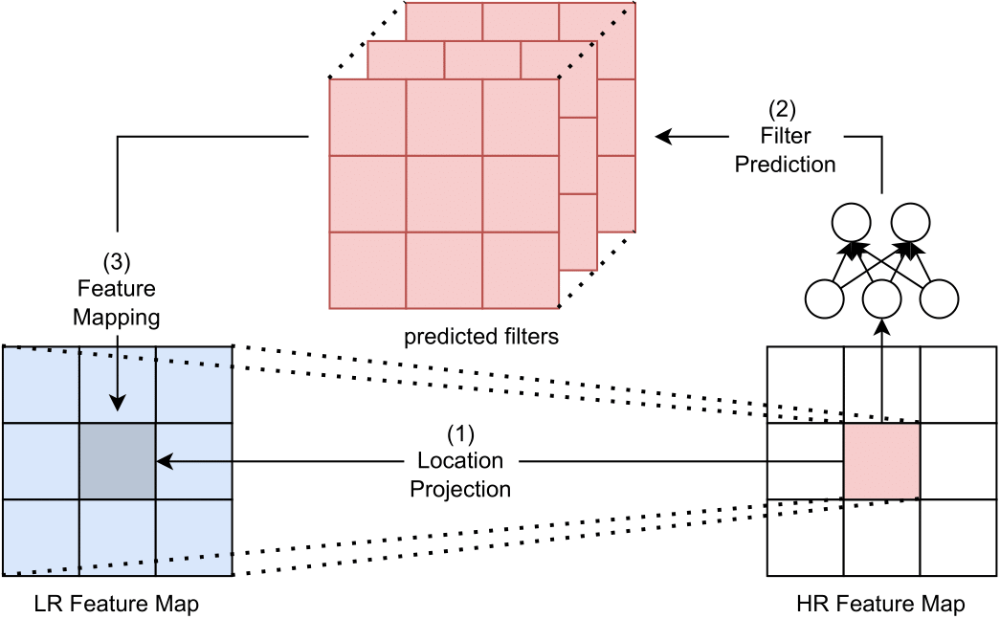
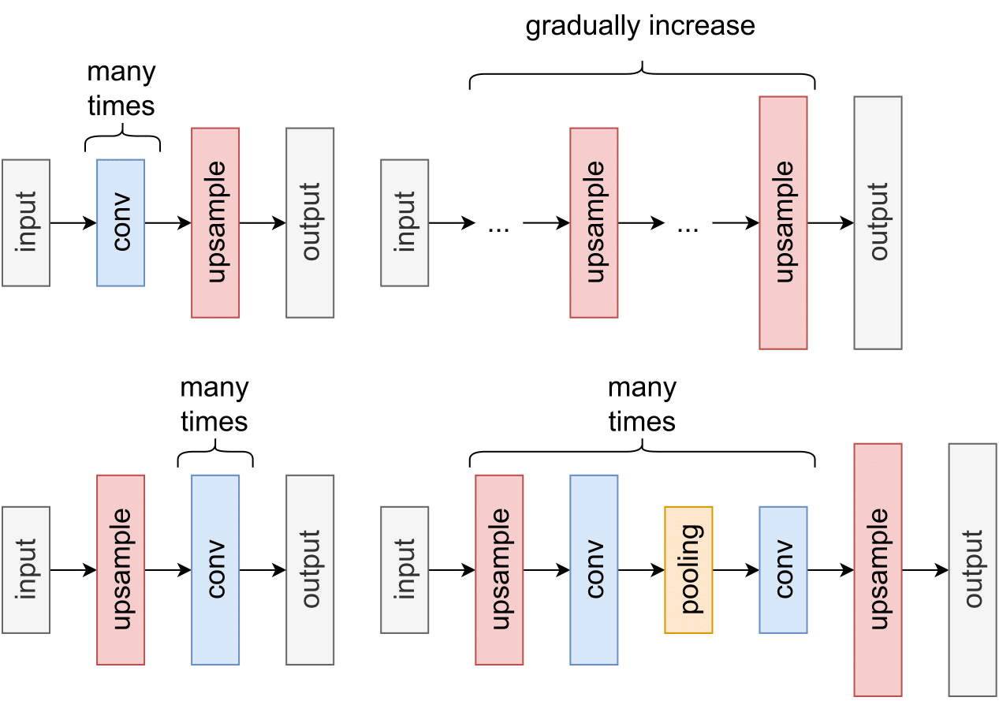
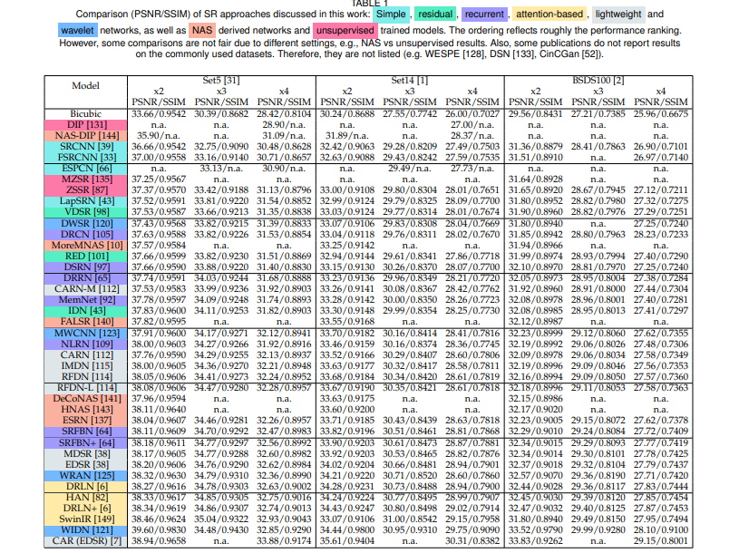

With the advent of Deep Learning (DL), Super-Resolution (SR) has also become a thriving research area. However, despite promising results, the field still faces challenges that require further research e.g., allowing flexible upsampling, more effective loss functions, and better evaluation metrics. We review the domain of SR in light of recent advances, and examine state-of-the-art models such as diffusion (DDPM) and transformer-based SR models. We present a critical discussion on contemporary strategies used in SR, and identify promising yet unexplored research directions. We complement previous surveys by incorporating the latest developments in the field such as uncertainty-driven losses, wavelet networks, neural architecture search, novel normalization methods, and the latests evaluation techniques. We also include several visualizations for the models and methods throughout each chapter in order to facilitate a global understanding of the trends in the field. This review is ultimately aimed at helping researchers to push the boundaries of DL applied to SR.

Hold on to your lab coats, fellow scientists! This work will take you on a wild ride through the world of Super-Resolution (SR). In SR, the quest is to scale up a Low-Resolution (LR) image to a High-Resolution (HR) image. Our work will send you into a journey with the ins and outs of SR, diving into the basic concepts, state-of-the-art methods and new ideas for SR.
The work commences with an introduction to the basic definitions and terminology. It then proceeds to discuss evaluation metrics for SR solutions. Along the way, you'll encounter various datasets that provide diverse data types, like 8K resolution images or video sequences. The adventure continues as you delve into learning objectives of Super-Resolution: Regression-based SR (also with uncertainty), Generative SR, and, more recently, Denoising Diffusion Probabilistic Models.

This work dives also into the world of various upsampling methods, a critical aspect in image SR. It covers the whys and hows of interpolation-based and learning-based upsampling techniques and also problems appearing with upsampling techniques (e.g., artifacts) in supplemental material. Also, our work explores the challenges and potential solutions of flexible upsampling for real-world scenarios with arbitrary scaling factors.
You'll also learn about additional learning strategies such as curriculum learning, enhanced predictions, learned degradation, network fusion, multi-task learning, and normalization techniques like the Adaptive Deviation Modulator (AdaDM).

But wait, there's more! Gather around, as we embark on an epic quest to unveil the mystic secrets for SR models and architectures! In this treacherous journey, we will first traverse the hallowed halls of upsampling location, unearthing four known and distinct artifacts: Pre-upsampling, Post-upsampling, Progressive Upsampling, and Iterative Up-and-Down Upsampling. These relics, as displayed in a mystical illustration, shall guide our understanding of the SR models' construction.

In this wondrous land, we'll encounter these primary categories: Simple Networks, Residual Networks, Recurrent-Based Networks, Lightweight and Wavelet-based Models. We shall explore various state-of-the-art architectures and discuss their pros and cons. Finally, you will get a scoop of Unsupervised SR and Neural Architecture Search for SR! At last, but not least, we will discuss the future of SR, and the challenges that lie ahead. So, gather your party and embark on this thrilling adventure, delving into the diverse and intricate world of deep learning-based super-resolution networks and unlock its secrets! Spoiler-Warning: Big tables included.

@ARTICLE{10041995,
author={Moser, Brian B. and Raue, Federico and Frolov, Stanislav and Palacio, Sebastian and Hees, Jörn and Dengel, Andreas},
journal={IEEE Transactions on Pattern Analysis and Machine Intelligence},
title={Hitchhiker's Guide to Super-Resolution: Introduction and Recent Advances},
year={2023},
volume={},
number={},
pages={1-21},
doi={10.1109/TPAMI.2023.3243794}}